It was a crisp Sunday morning when Heather decided to take Neet and Buddy on a spiritual and culinary adventure. They were going to the white-marble Indian temple. Heather wanted to see the carvings. The dogs had heard the word café.
Neet, who had no concept of spirituality but a deep appreciation for food, was already wagging his tail. "A place dedicated to food and peace? This is genius!"
Buddy wanted a quiet visit and something from the café afterward. He had a plan: behave so beautifully that Heather would offer seconds without being asked. He looked at Neet. "Let’s just make sure we behave."
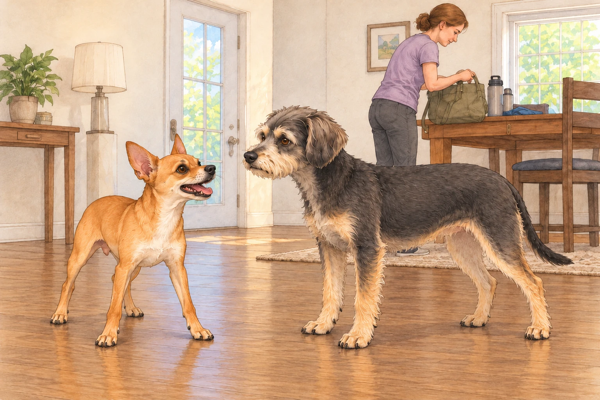
Heather sighed. "Neet, that means no barking at statues and no begging for extra food."
Neet smirked. "I can’t make any promises."
Buddy could. He sat beside Heather while she gathered her things, keeping his paws together and his eyes soft. She rubbed his head.
"Ready, sweetheart?"
Perfect. She had noticed.
Neet pushed his head under the same hand. "Yes."
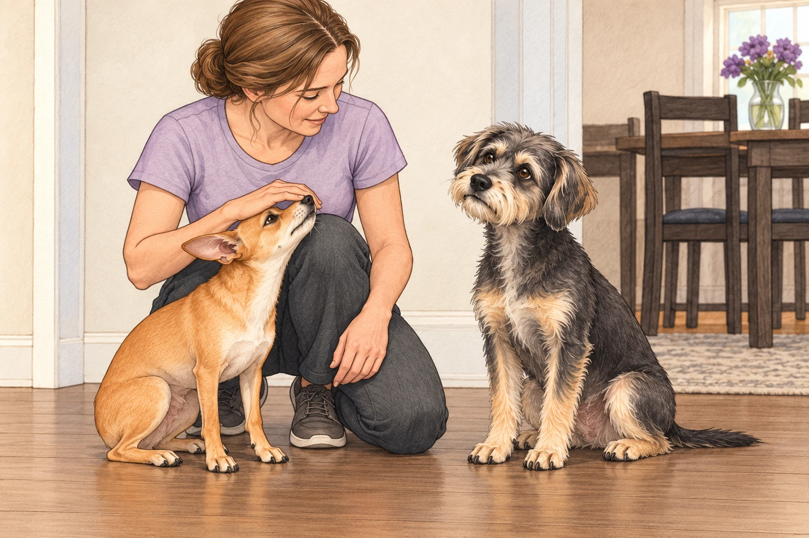
Buddy stood up. This was going to require more than sitting.
The Marvelous Architecture (and Neet’s Interpretation of It)
As they approached the temple, Heather was awestruck by its intricate carvings, delicate domes, and grand staircases leading to the main sanctum.
Neet, however, had other observations.
"WHY ARE THERE SO MANY LIONS?" he barked, pointing a paw at the carved stone figures.
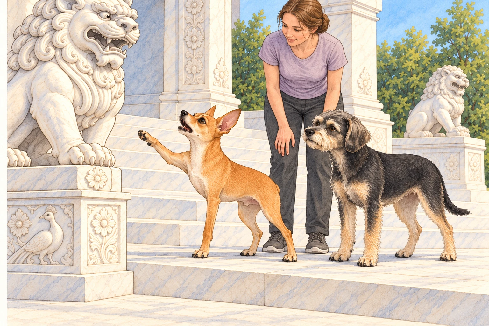
Buddy sighed. "They’re guardians, Neet. Symbolic protection."
Neet gasped. "Symbolic?! I thought this was a warning! Like beware, real lions ahead!"
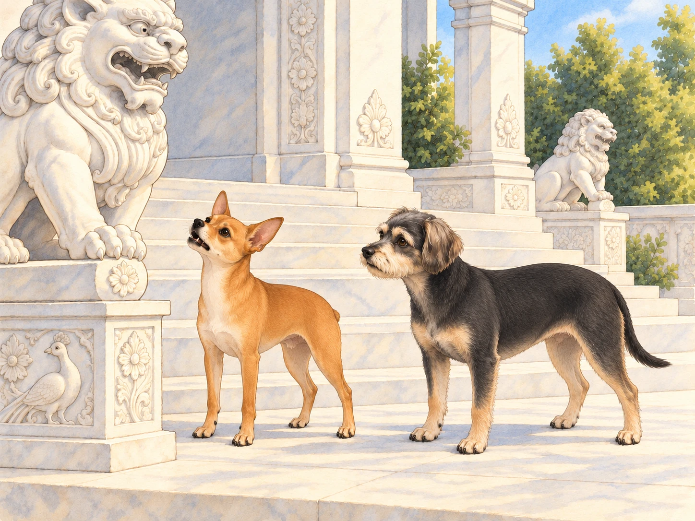
The lion did not answer. Neet checked the other lion in case it was in charge.
Heather shushed him. "Neet, stop yelling ‘lions’ in a place of worship."
Buddy lowered his voice. "Look at them. They’re sitting quietly. You can do that."
Neet looked at the lion, then at Buddy.
"Show me."
Buddy sat. He held his head up, his mouth closed, and his front paws very still. Heather stopped to admire a carving.
Neet watched him for a moment, then sniffed the ground beside his paws.
"What are you guarding?"
"Nothing. I’m showing you."
"Terrible assignment."
Heather moved a few steps along. Buddy stayed seated until Neet whispered, "Your person’s escaping."
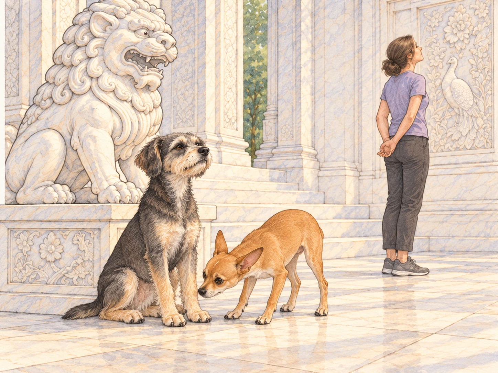
He hurried after her. The demonstration had gone so well that nobody needed him in it.
After a few more dramatic exclamations about "the unnecessarily large amount of peacocks" in the carvings, Buddy tried a different approach. He gently nudged Neet’s shoulder and looked up where Heather was looking.
"Find one. Don’t announce it."
Neet stared at the carving. His mouth opened.
Buddy looked at him.
His mouth closed.
Heather leaned down. "There you are. Look at all those little details."
Buddy followed her gaze. A curve he had thought was part of the background belonged to the peacock. He tipped his head. Heather smiled at him, then looked back, enjoying the discovery without hurrying on.
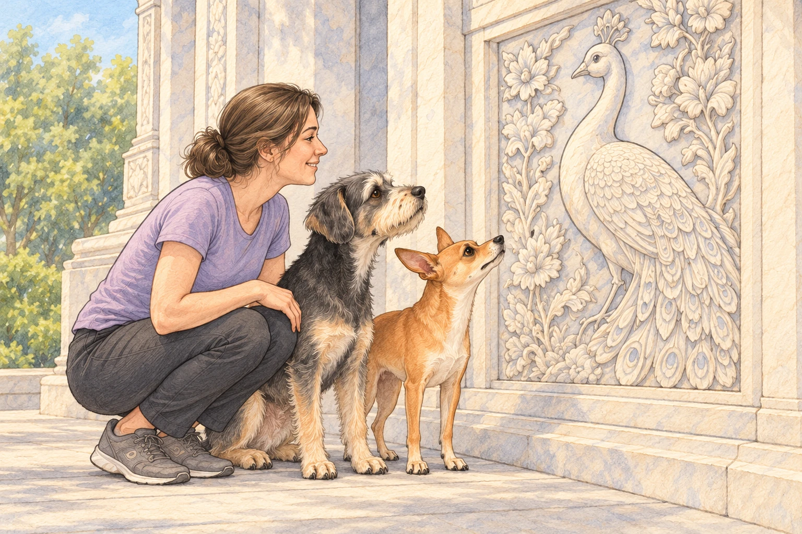
Neet leaned against Buddy.
"Found another."
"Quietly."
"I’m whispering. This is a private peacock."
Buddy nearly laughed. He stayed beside Heather this time, rather than trying to impress her from somewhere she had already left.
They finally entered the temple, where Neet almost tripped over his own paws upon seeing the main idol.
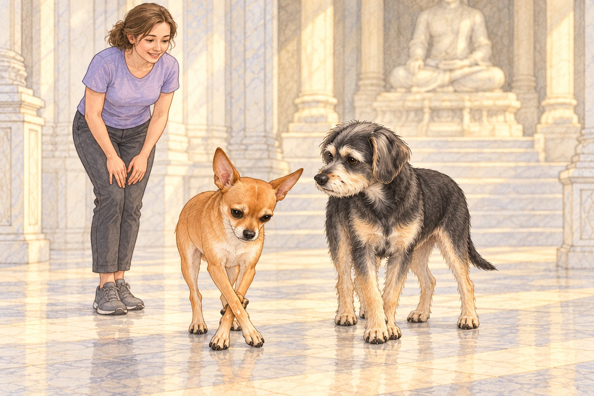
"Heather, that is a gigantic statue. I feel underdressed."
Buddy looked down at his own bare paws, then stood a little straighter. "You are underdressed. You’re a dog."
Neet inspected Buddy’s chest. "You didn’t bring anything either."
Buddy stopped standing quite so straight.
Heather rested a hand briefly on each head. "Just stay with me, you two."
For the rest of the tour, they did. Neet occasionally pointed his nose at a carving and looked meaningfully at Buddy. Buddy acknowledged each discovery without giving it an announcement.
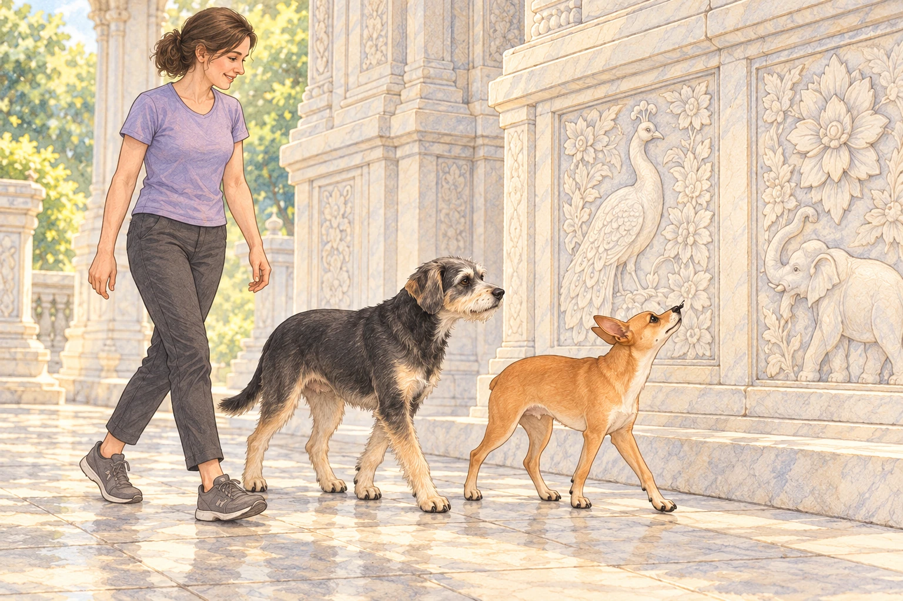
By the time Heather turned toward the café, Neet had several important peacocks trapped behind his teeth.
The Café of Dreams
Neet’s nose twitched. "Do you smell that? That’s the smell of destiny."
Buddy wagged his tail. "It’s the smell of Gujarati Thali."
Heather ordered a full Gujarati thali, and soon, their table was overflowing with food:
Rotli (thin flatbread)
Dal (lentil soup)
Shaak (vegetable curries)
Kadhi (yogurt-based curry)
Dhokla (savory steamed cakes)
Samosas
Aamras (mango purée)
Chaas (buttermilk)
Neet’s eyes widened. "I have never been this happy."
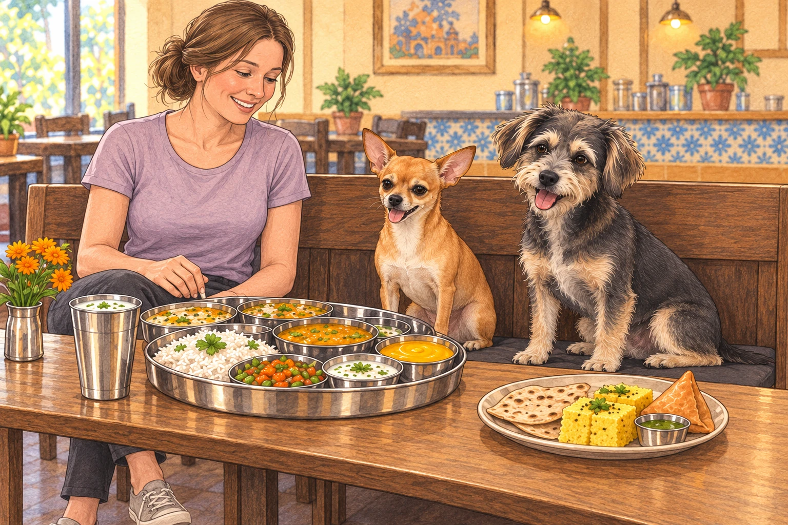
Heather handed Buddy a small piece of roti. "Buddy, go easy on the dal. It’s spiced differently."
Buddy took a polite bite and wagged his tail. "It’s delicious!" He swallowed, sat straight on the café bench, and looked at Heather without looking at the remaining roti. This required looking at it several times to check where not to look.
Neet leaned close. "You’re looking at your lunch backwards."
"I’m being patient."
"With your neck?"
Buddy turned to face Heather again. She was taking a bite herself. He waited. She looked toward him, and he quickly moved his eyes away from the food.
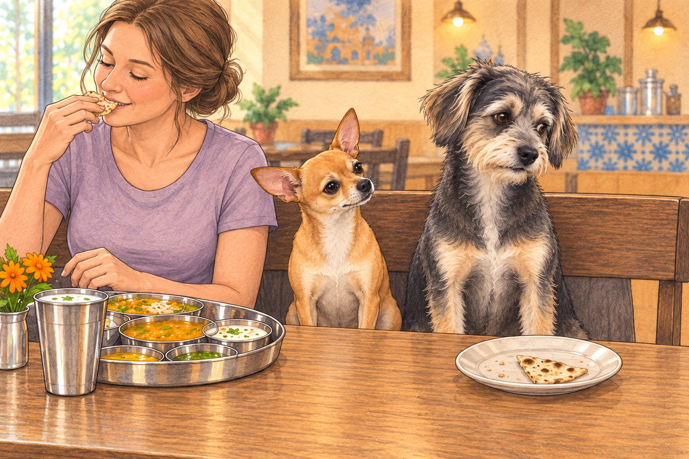
"All right there, Bud?"
He wagged his tail.
Heather smiled and went back to her meal. Buddy had successfully communicated that he needed nothing.
Neet, on the other hand, dove in headfirst.
Within seconds, dal was on his nose, aamras in his fur, and he was slurping chaas like it was his life’s mission.
Heather sighed. "Neet, slow down!"
Neet shook his head. "I can’t. I am becoming one with the thali."
Buddy edged his roti out of the splash zone. "You’re wearing more food than you’re eating."
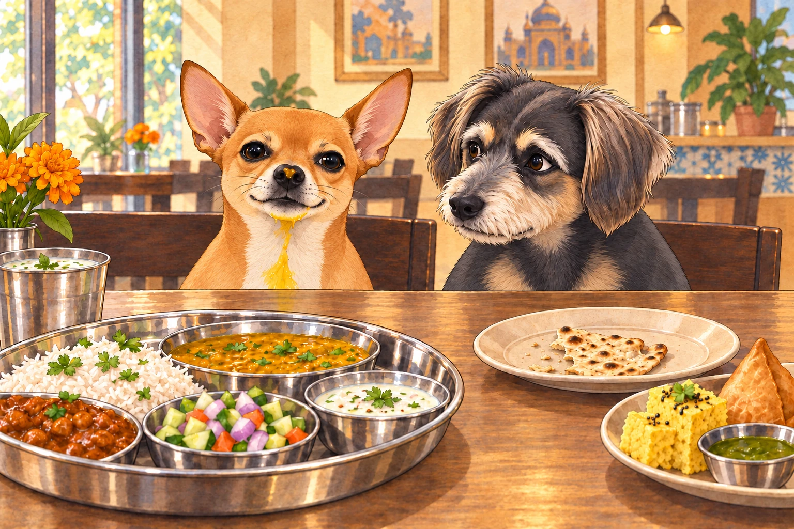
Neet glanced at the rescued piece.
"Are you keeping that?"
Buddy put a paw beside it. "Yes."
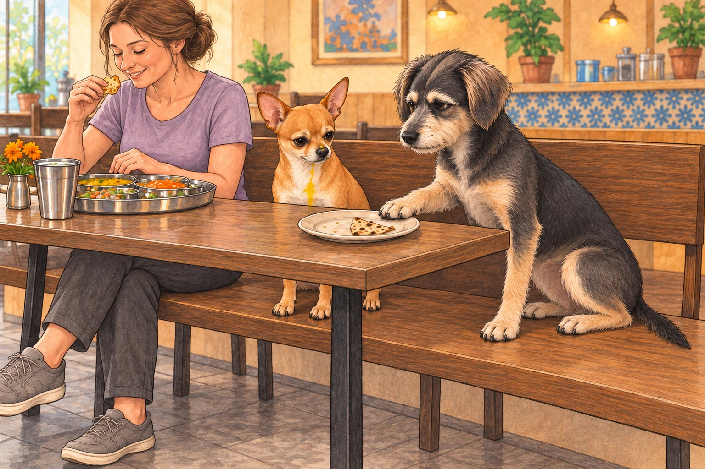
"You’re doing the lion again."
Buddy picked it up and ate it. There. Nothing left to guard.
As Neet tried to simultaneously chew a dhokla and a samosa, he suddenly paused. His eyes widened.
"SPICY! SPICY! SPICY!" he yelped, fanning his tongue.
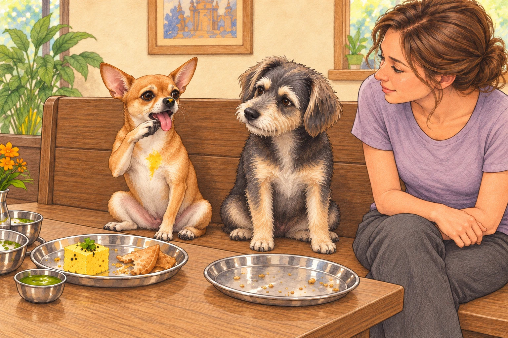
Heather calmly handed him a glass of chaas. "This is why we pace ourselves."
Neet gulped it down, then exhaled dramatically. "That was a close call. But totally worth it."
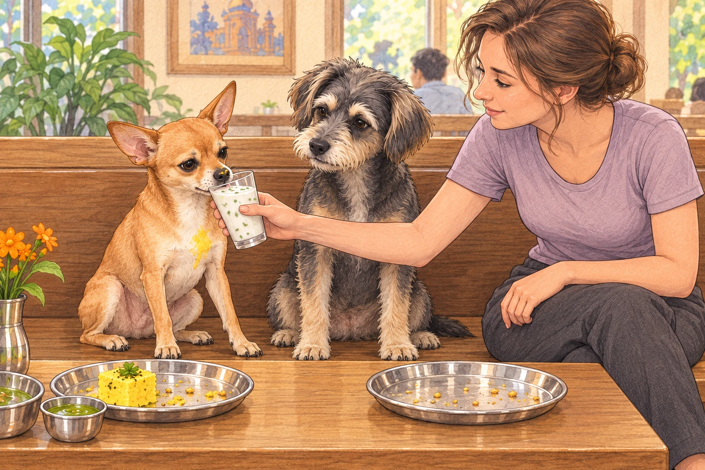
Heather wiped his nose with a napkin. Buddy sat even straighter.
She was looking the other way. He turned his head, trying to bring his splendid behavior into view without bringing his nose too close to the roti. His shoulders followed. One front paw slid along the bench.
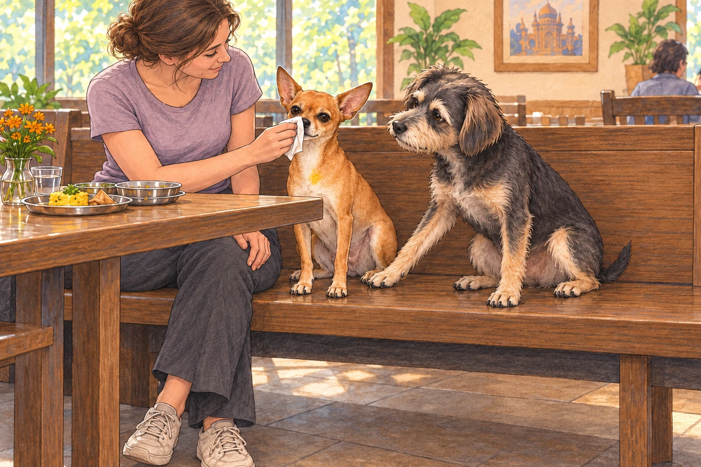
Buddy scrambled to recover his seat. His shoulder bumped Neet just as Heather finished wiping him, and his beard brushed the aamras still in Neet’s fur.
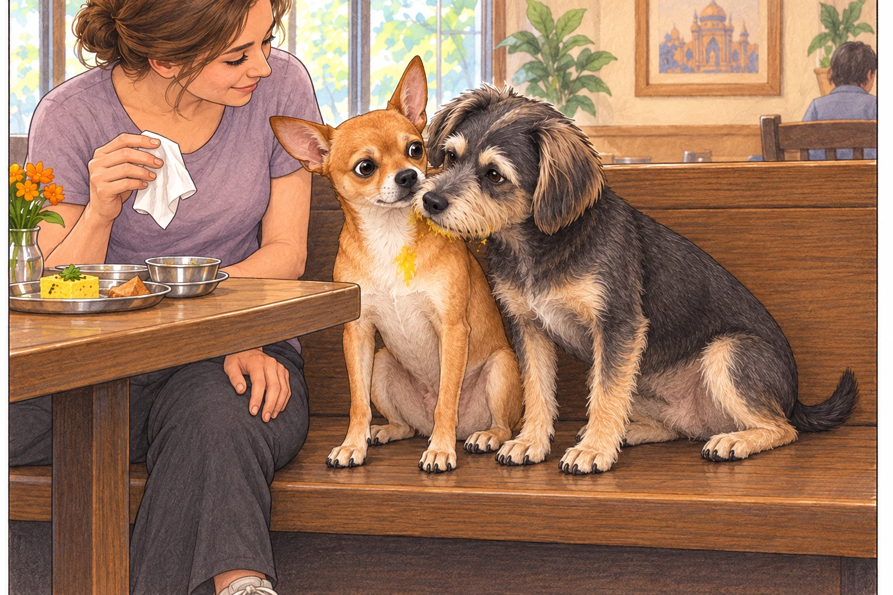
A neat little smear of aamras appeared on Buddy’s beard.
The two dogs looked at each other.
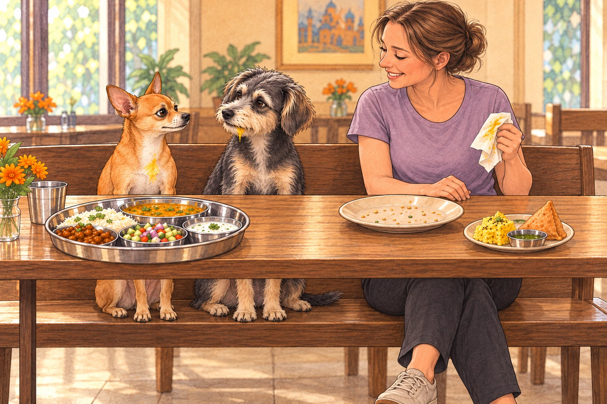
"Welcome to the thali," Neet said.
Buddy could smell mango under his own chin. He had protected his roti, ruined his clean beard, and still obtained no seconds.
Heather laughed softly and turned the napkin to a clean side. "Your turn, apparently."
He leaned into her hand while she wiped him. When she finished, he stayed where she could see him and looked plainly at the roti.
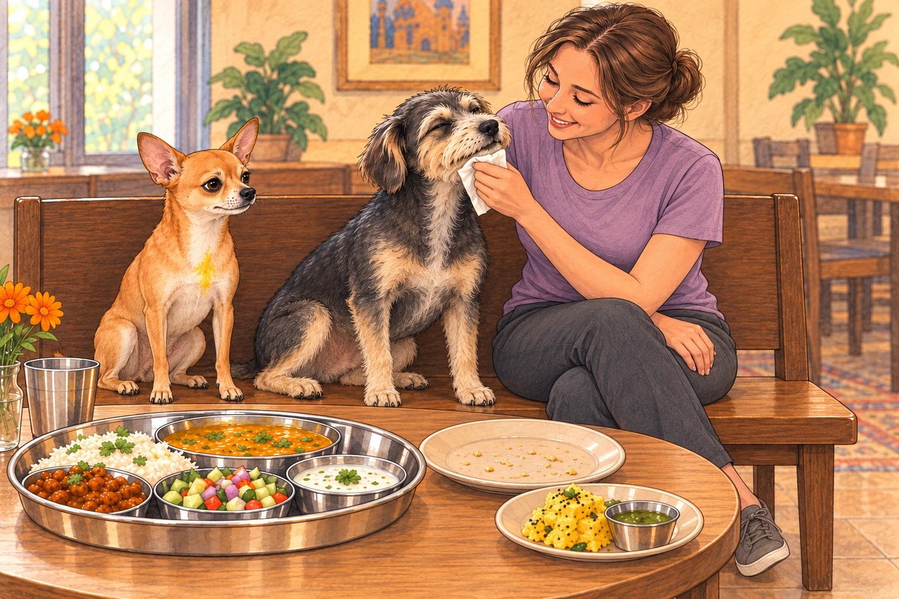
"A little more?" she asked.
Buddy wagged his tail before his dignity could interfere.
"And you’ve been very patient," she told him, giving him another piece.
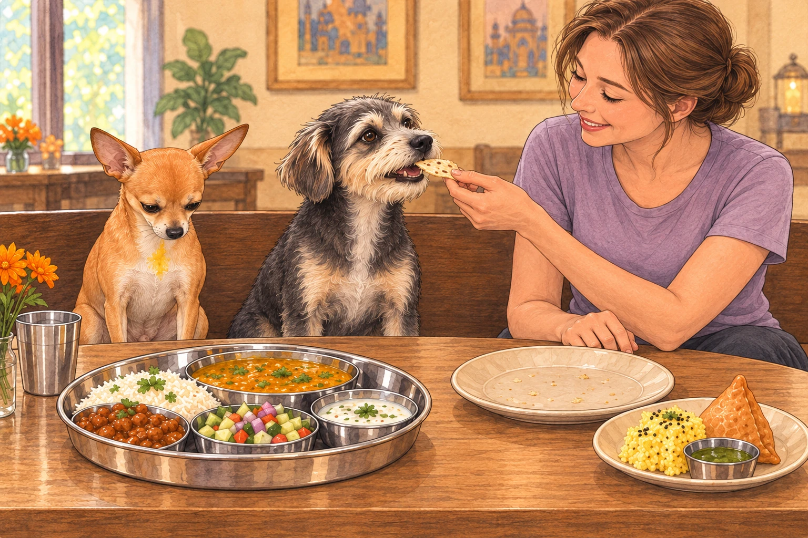
Buddy accepted it with dignity, then ate it before Neet finished checking his own nose for leftovers.
"That was easier," Neet observed.
Buddy swallowed. "I noticed."
Heather took another bite of her own meal. This time Buddy let her enjoy it. Neet inspected the empty place where the samosa had been, apparently surprised that finishing food made it unavailable.
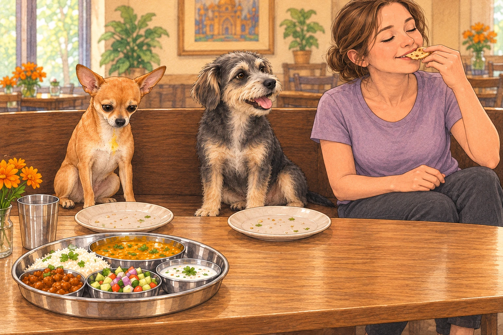
The Snack Heist
Before heading out, Heather decided to grab some snacks to go—a decision that immediately reawakened Neet’s chaotic tendencies.
Heather picked up:
Jalebi (crispy sugar spirals)
Fafda (crispy gram flour sticks)
Khandvi (gram flour rolls)
Gulab Jamun (syrupy dumplings)
Neet, mesmerized, whispered, "I will be taking some of those back home."
"We all will," Buddy said.
Neet considered this arrangement. "Some is a very flexible word."
Heather set the open snack box on a low stool beside her while she paid at the counter. Neet ever so casually attempted to swipe a piece of jalebi. He moved one paw at a time, as though this made the rest of him innocent.
Buddy put his paw across Neet’s before it reached the jalebi. "She’s paying. Wait." He was not losing his own snack because Neet couldn’t manage ten seconds.
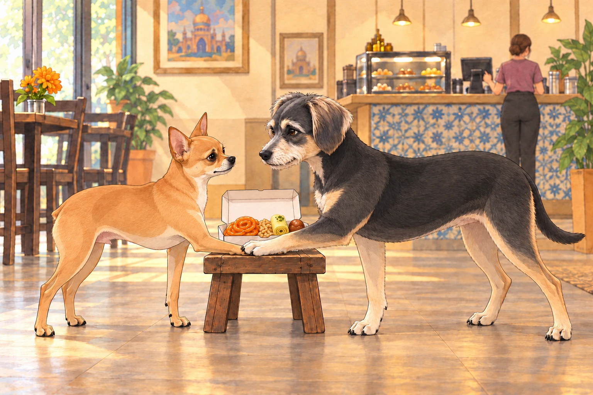
Neet grumbled. "Okay, but what if it—"
Buddy kept his paw where it was. He looked at the jalebi himself. Waiting was becoming considerably harder now that he was responsible for it.
Neet sighed. "Fine, fine. We do this legally."
Neet withdrew his paw. Buddy sat beside the stool. He had given a clear instruction. He intended to follow it.
The jalebi smelled sweet.
Buddy looked away. He could see Heather’s hand at the counter. Still paying. He looked back to make sure the jalebi was still there.
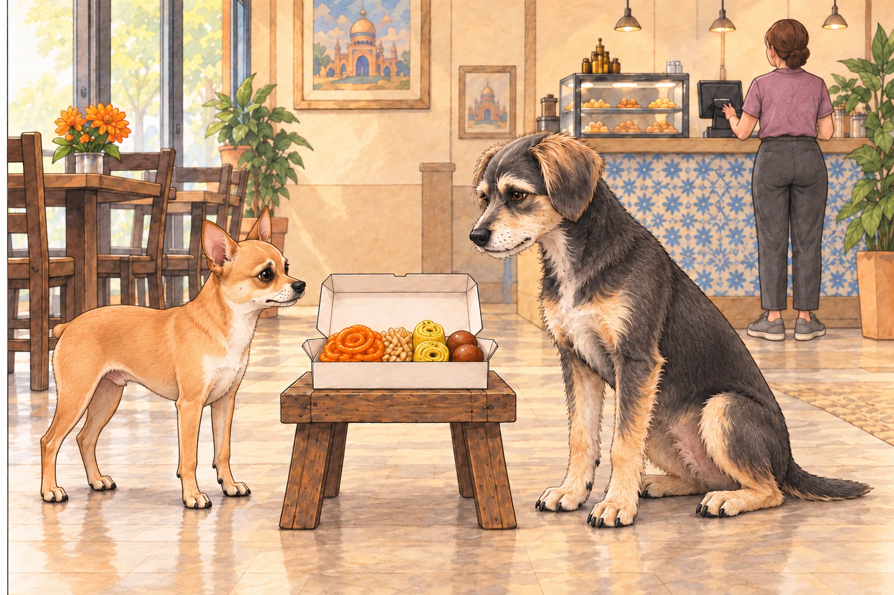
It was.
He leaned closer.
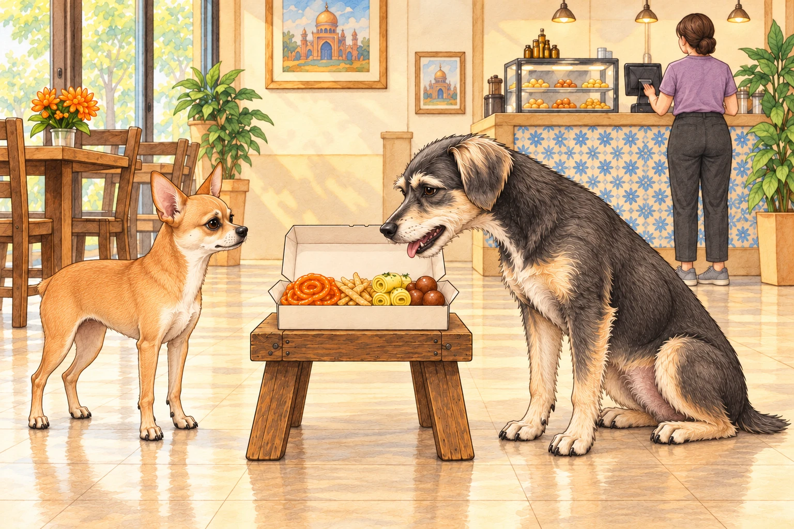
"What are you doing?" Neet whispered.
"Checking."
"With your mouth?"
Buddy shut it. His nose was already hovering over the box. He backed away before Neet had to put a paw across his.
Neet sat down beside him, looking delighted by the new information.
"The lion wants lunch."
Buddy could have argued. He could have pretended he was inspecting the packaging. Instead, he looked at Neet.
"Yes. I do."
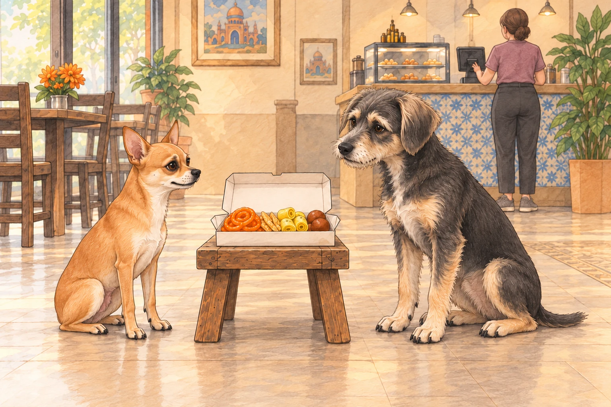
Neet looked from him to Heather, then back at the box. Buddy waited for another slow, innocent paw.
Instead, Neet leaned away from it too.
"She’s almost done," he said.
They sat together, watching Heather rather than trying not to watch the food. When she turned, two faces tipped up at once.
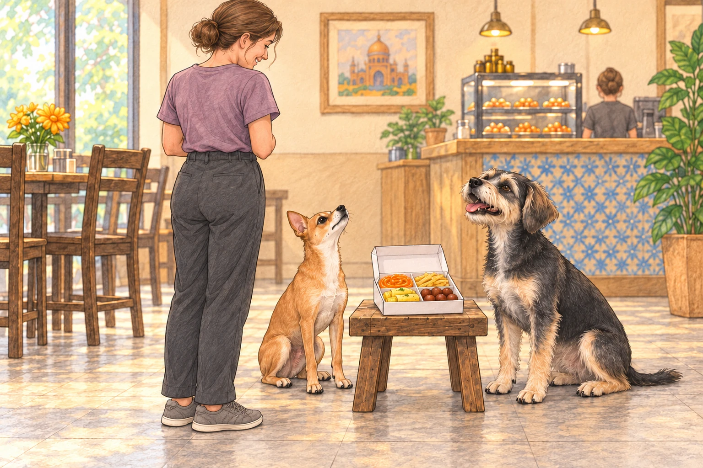
"Oh, you hopeful little ragamuffins."
Heather, noticing Neet’s desperation, handed him one small piece of fafda. Then she gave Buddy a piece too.
Neet held his like it was the holy grail. "This is the best day of my life."
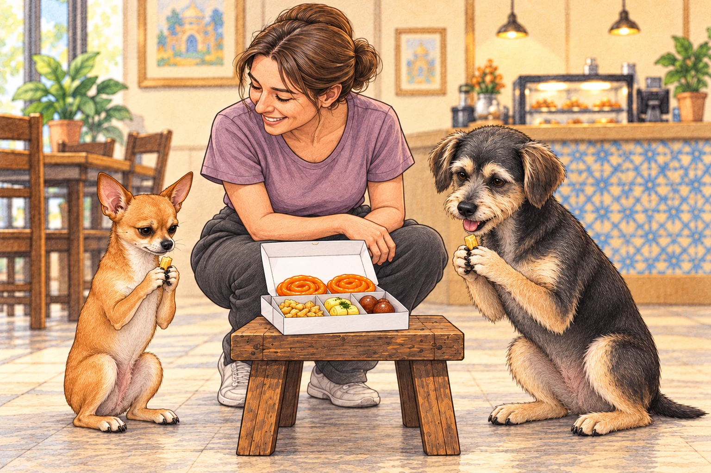
Buddy ate his without arranging his face into anything special. Heather closed the box and tucked it into the bag.
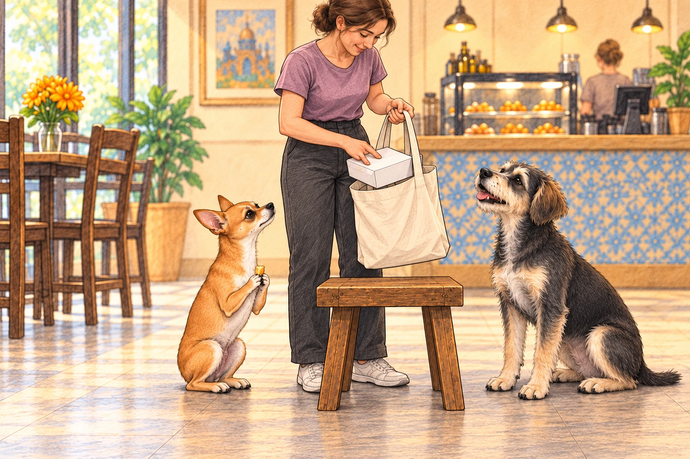
Neet glanced at the lid. "Very thorough protection."
"Excellent work," Buddy agreed.
The Ride Home (and the Aftermath)
On the way home, Neet sat smugly with his bag of snacks, his stomach full, and his spirit enlightened (mostly by food).
"I have ascended today," Neet declared. "Spiritually and gastronomically."
Buddy rolled his eyes. "You have farsan crumbs in your fur."
Heather chuckled. "So, would you guys come back here again?"
Buddy wagged his tail. "Absolutely."
Neet gasped. "We’re allowed to come back?! After all that?!"
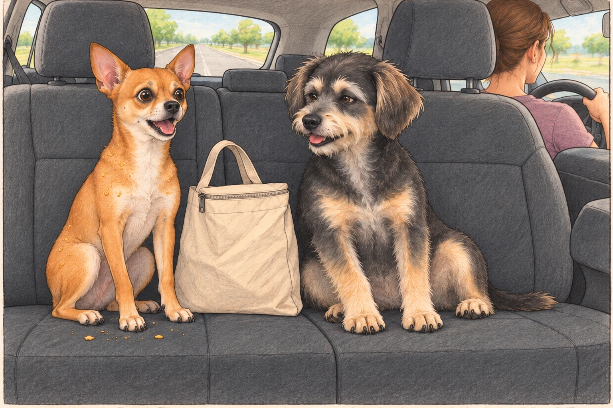
Heather smirked. "Shockingly, yes."
Neet grinned. "In that case… I think we need another thali next week."
Buddy sighed. "Let’s recover from this one first."
Buddy settled with his nose near the closed snack bag. Neet eyed it once, then lay down too.
"Symbolic protection?" he asked.
Buddy rested his chin beside the bag. "Try me."
For the rest of the ride, the jalebi traveled undisturbed.
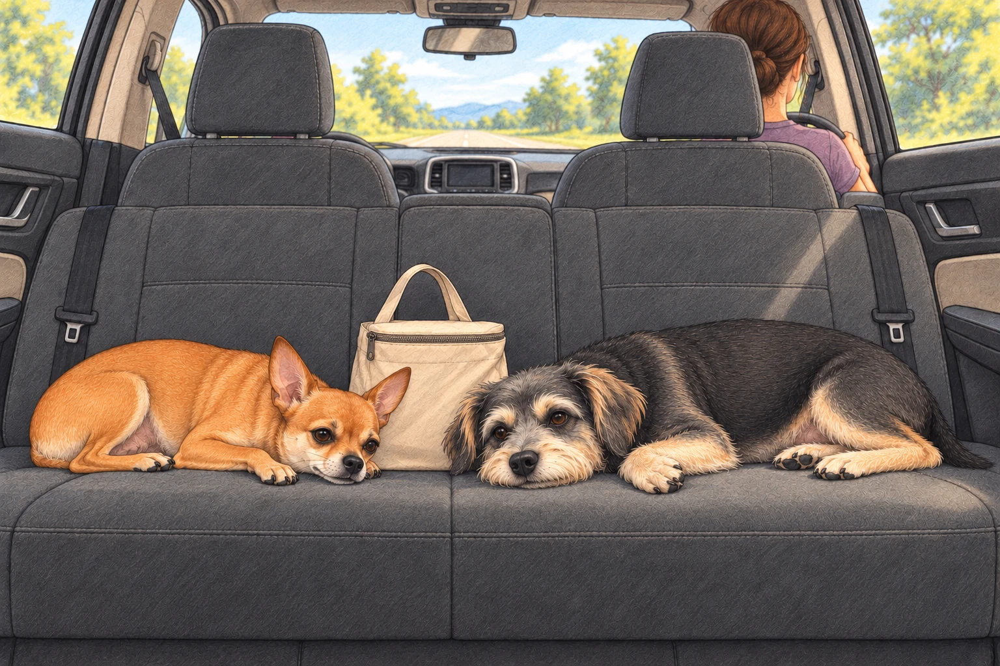